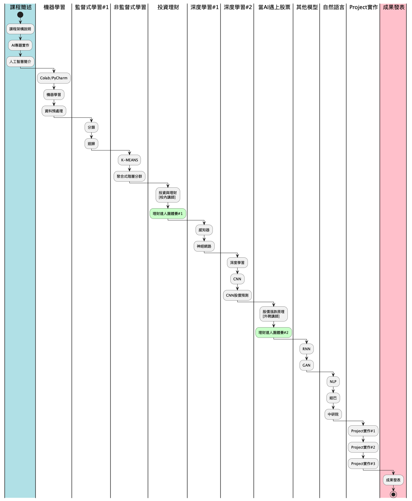

課程大綱
1. 課程目標
學完這門課，你不會變成投資達人、不會變有錢、不會變成AI專家；但是你會了解投資理財的重要性、也許會開始行動、可能會覺得AI很有趣，將來會花時間去研究它
2. 課程要求
這門課程假設你已具備以下能力：
- 熟悉Python基本語法
- 變數、輸入、輸出
- 條件判斷、迴圈
- 熟悉Python特殊的資料型別
- Function
- 第三方模組的安裝/管理
- Numpy, Pandas, Matplotlib套件的基本概念
- 簡單的專題實作能力
3. 評量方式
- 出席: 10%
- 課堂表現: 10%
- 課堂練習作業: 20%
- 期末project: 60%
4. 課程進度

Figure 1: 課程進度